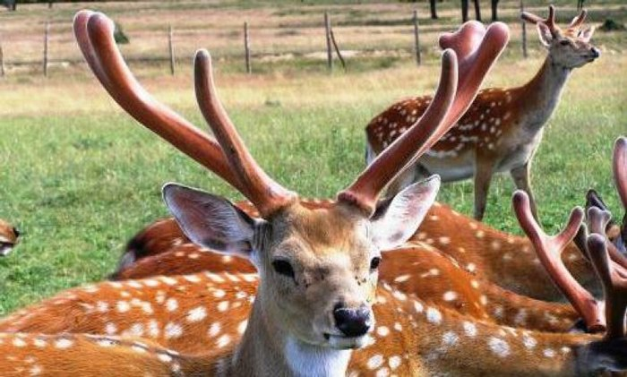

Туристичні місця закарпаття
1.Озеро Герешаска та Драгобратський водоспад
Поруч з гірськолижним курортом і долиною Драгобрат, на висоті понад 1500 метрів над рівнем моря, чудовий природний ансамбль утворюють Драгобратський водоспад та льодовикове озеро Герешаска. Підйом до водограю непростий, проте з висоти відкриваються фантастичні краєвиди дикої природи, які запам’ятаються на все життя!
Драгобратський водоспад приймає найбільш видовищного і могутнього вигляду після затяжних дощів або під час танення снігу. А високогірне озеро дивовижної прямокутної форми — озеро Герешаска, ніби сховалось у карпатських горах на висоті 1577 метрів над рівнем моря. Ширина озера — близько 110 метрів, глибина — до 1.2 метрів. Щоправда, тут не покупаєшся – навіть у сонячний літній день вода тут не прогрівається вище 11 градусів тепла.
2.Водоспад Воєводин
Водоспад Воєводин — одне з природних див, що їх приховують південні схили полонини Руни. Дістатись до водоспаду нелегко, тому більшість туристів відвідують сусіднє диво природи — водоспад Шипіт. Але Воєводин вартий того, щоб дійти туди і побачити його красу. Бурхливий потік, який зривається з висоти 24 метрів, є частиною струмка з тією ж назвою: Воєводин. Він бере свій початок на полонині Руні, тече глибокою ущелиною, а далі впадає у гірську річку Шипіт.
3.Оленяча ферма

Між селами Іза та Липча на Закарпатті знаходиться єдина в Україні оленяча ферма. Створили її у 1987 році, саме тоді після ліквідації колгоспу завезли перших плямистих оленів. Розводили оленів не задля шкури та м’яса, а з метою отримання (пантів) рогів з оленів, які широко використовуються в медицині. Цікаво, що роги можуть вирости за день, аж на 5 сантиметрів і уже через 2 місяці вони знову готові до зрізання. Тобто, оленів для цього не вбивають.
Після розвалу Радянського Союзу, ферма стала збитковою, зарплату працівникам не виплачували, за тваринами не доглядали, що призвело до різкого скорочення чисельності стада та мало не призвело до її закриття. Але у 2003 році ферма отримала нове життя – її викупив приватний підприємець, який використовує і надалі ферму з метою добування пантів та, як додатковий заробіток – пускає сюди туристів. До речі, тут дозволяють годувати оленів прямо з рук.
4.Реабілітаційний центр для ведмедів
Створений в 2011 році реабілітаційний центр бурого ведмедя «Синевир» в Закарпатській області – єдиний такого типу центр в Україні. Це місце вразить будь-яку людину і нікого не залишить байдужим. Сюди привозять ведмедів, з якими погано поводилися попередні господарі. Наприклад, один з цих ведмедів раніше був у цирку, де його вчили танцювати, поставивши на розпечене залізо. У цьому центрі за ведмедями доглядають і вчать пристосовуватися до природних умов життя.